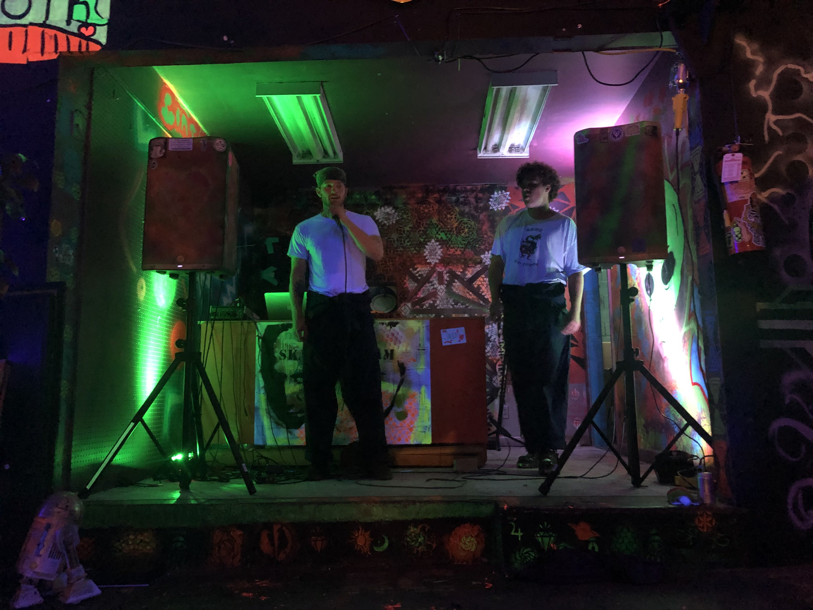

My education stopped after highschool, I wasn't sure what I wanted to do and choosing a career at 18 is a very big decision that I wasn't ready to make. I started working in kitchens when I was 16 until present. I worked hard and have never gotten fired from a job, and always was able to take on more responsibility after becoming more knowledgable and comfortable in whatever kitchen I was working in. I decided to enroll in Epicodus with the intention to graduate and get a career in tech. I wanted to pursue this because I knew that working in kitchens is not something that I want to do. After this first week at Epicodus I have genuinly found enjoyment coding. Which is a little suprising to me, I didn't think I would have as much fun as I am, a very pleasant surprise that was.
Outside of school my interests and hobbies include the following: skating, rock climbing, making music with my friends, and actively trying to better myself as a person to be more healthy physically and mentally.
The skills I have are pretty limited, but I do know how to put my head down and work hard when I need to, I'm am a creative person and can think outside of the box, and I have the ability to make myself and other people food that tastes pretty good too.